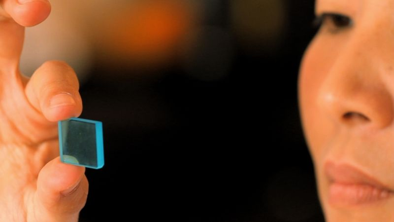
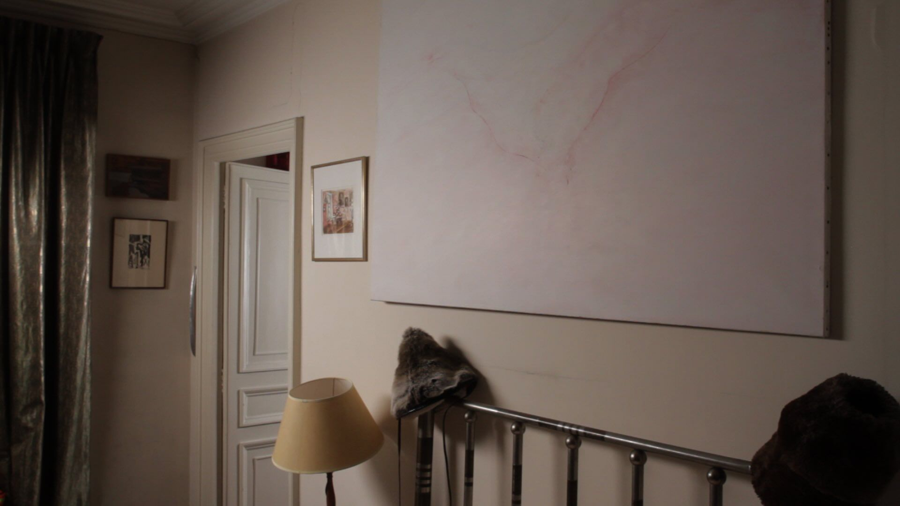
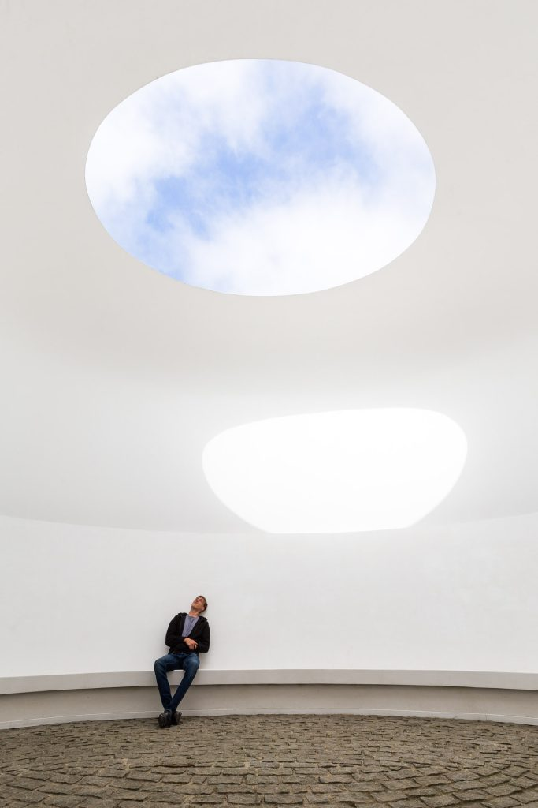
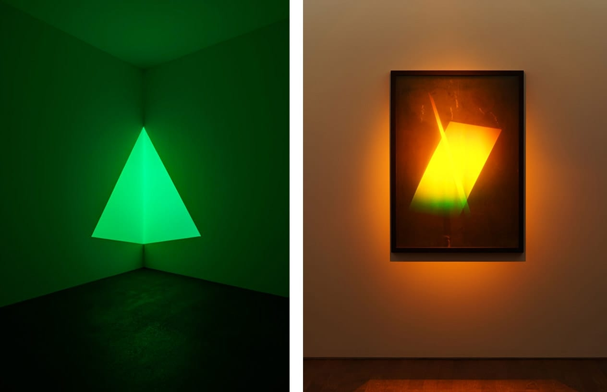
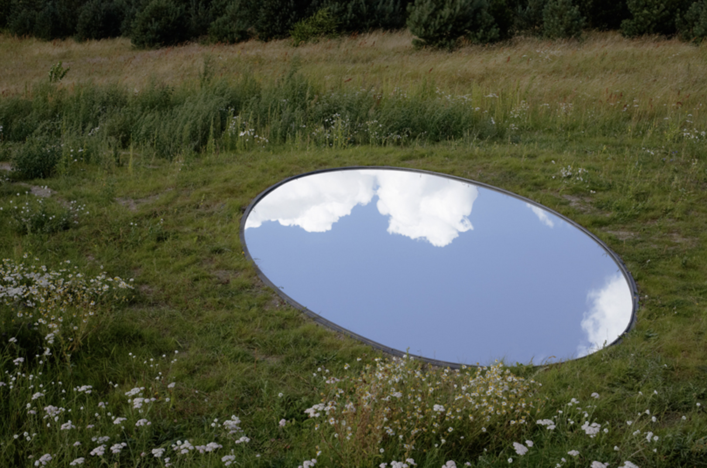
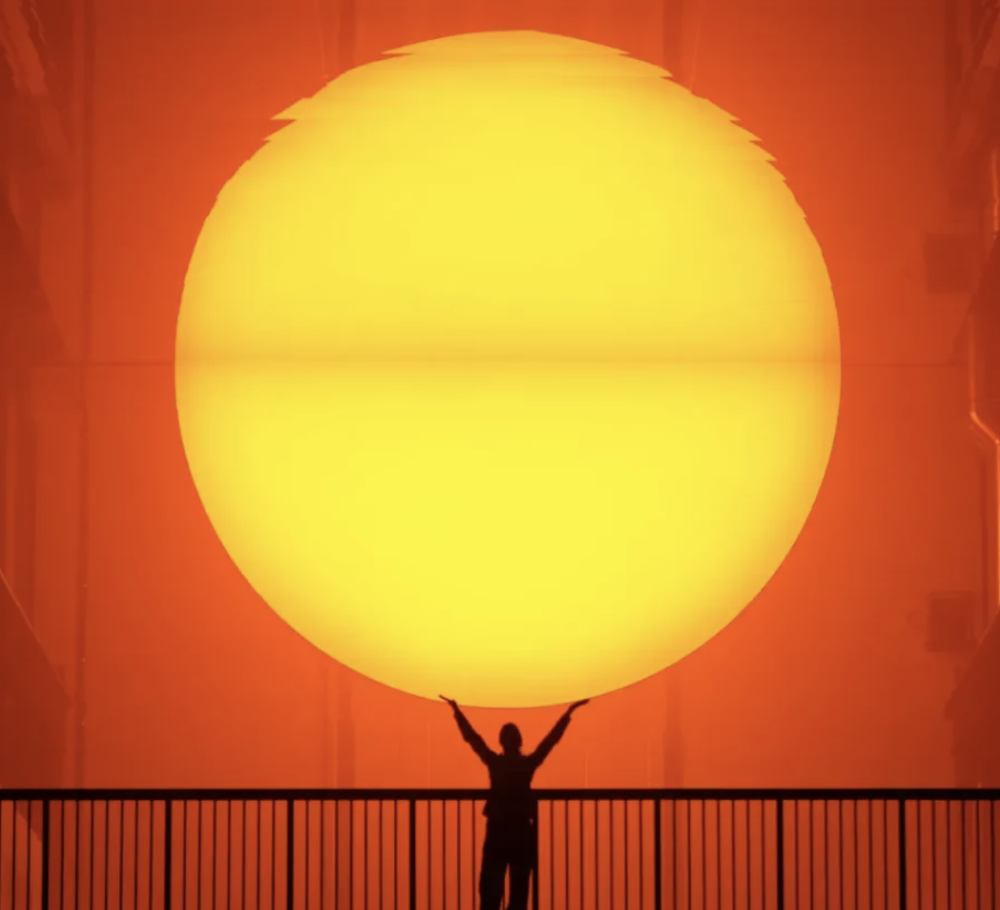
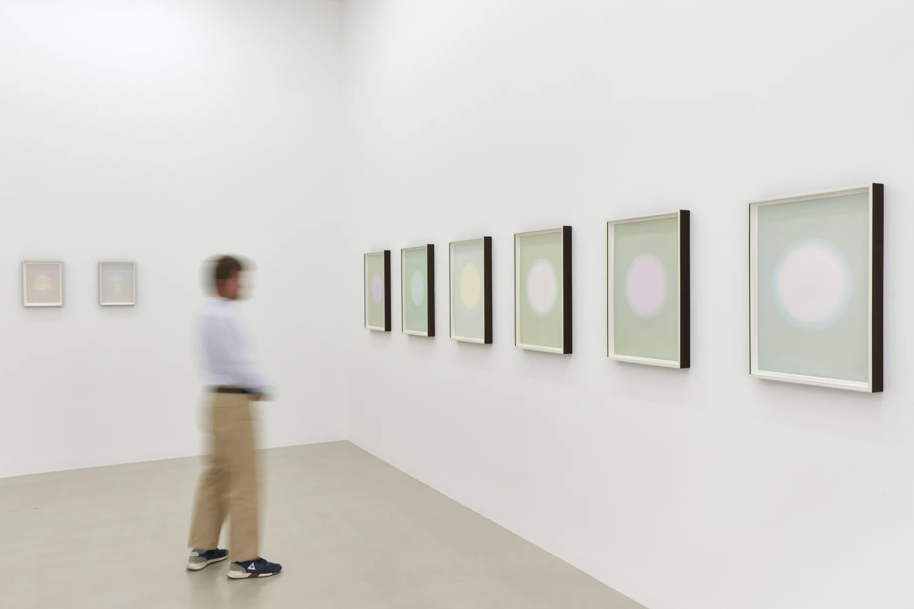

Thesis overview
This project stems from a deep exploration of the temporal frameworks that govern our lives. How can we move beyond rigid, universalized notions of time and reclaim our autonomy over how we experience it? how can we reframe computation as a tool to explore history, not erase it?
below are the project details, as explained in the propose review:
What is "Resistant Temporalities"?
"Resistant Temporalities" is a critical computation project that reexamines how we perceive and interact with time and space—how we read light, shadow, directions, and the environment around us. Over time, standardized systems have imposed a systematic, one-size-fits-all temporal and spatial experience. Clocks and calendars dictate time, leaving us blind to qualitative, holistic ways of understanding our surroundings. What if we could reclaim time as something experienced and created through our perception of the sun, the moon, the stars, and the clouds?
Humans have historically engaged with their environment to navigate and make sense of the world. Time was once an open-source project: the sun, stars, moon, shadows, and even the movement of water or sand communicated precise temporal and spatial meanings. These systems are unchanged; the stars still move 15 degrees per hour, the moon cycles through its phases, and the sun’s path remains constant. What has changed is our exposure to and awareness of these natural systems, replaced by imposed structures like digital clocks and satellite-based maps.
Today, time is treated as an unbreakable, linear construct—constant, unquestionable, and dictated in units like minutes and hours. Space is similarly reduced to abstractions in maps, detached from lived, tactile experiences. These constructs, presented as neutral, are deeply political tools that flatten temporal and spatial diversity into a single, Westernized framework. They are “lock-in technologies,” calcifying a monoculture that undermines localized knowledge and disempowers individuals from perceiving time and space on their own terms.
What would a more holistic, culturally sensitive understanding of time and space look like? Language, throughout history, has carried rich cultural philosophies tied to time and space. Could non-Western frameworks help us rediscover navigational and temporal techniques and reclaim our connection to the environment?
This project explores these questions through four distinct maps that layer solar, meteorological, celestial, and sensory data. These maps offer a dynamic representation of how the environment shapes human perception of time and space. They are intended to serve as an atlas, a point of reference, and a dictionary, expanding our understanding of temporal and spatial autonomy.
The logic behind these maps, designed around words and language, challenges the imposed monoculture of digital time and space. By returning to first-hand environmental observation and culturally embedded knowledge systems—like dictionaries of the environment created in barren landscapes—we can begin to rehabilitate autonomy over our temporal and spatial experiences.
Computational Methods
The computational methods I am using include mathematical graphing and parametric modeling of solar information, such as sun paths. I purposely apply parametric, quantitative measurements to a literary and qualitative subject, even though it may struggle to fit. This is to critique the homogenization of how we typically quantitatively measure the sun. In doing so, I critique the homogenization of environmental computation using the same metrics that are already being employed. My aim is to describe more nuanced and qualitative ways of experiencing time and space within these same frameworks.
The use of the index and parametric framework is repeated for the clouds and will extend to the stars and moon, ensuring that all the research relies on code and representational software. Parametricism is central to my project because it situates it within existing computational practices. This approach makes the work replicable and adaptable, allowing it to function as a case study for integrating other non-Western sources of environmental knowledge into broader frameworks—not just my chosen subject, the Arabic dictionaries.
I also incorporated machine learning and image classification to further explore environmental phenomena and plan to expand my use of computational methods as the project develops. Peripheral tools include website building, data visualization, and Arduino coding. These tools enhance accessibility and interactivity, serving as prototypes to test out these approaches.
Design methodology:
Critical - I am critiquing the ways digitization has flattened time and space, and I'm critiquing our blind acceptance of this way of living. We're so incredibly dependent on a dictated time, and we are (intentionally) oblivious to the fact that time is constructed, dictated, and deeply politicized. It's not just about time being measured but about how those measurements shape our reality, disconnecting us from more intuitive, lived experiences. This critique is not meant to reject technology outright but to confront how its unchecked dominance homogenizes and erases alternative ways of understanding the world.
It is also experimental and narrative. I’m building a framework that could apply to any science or system flattened by technology. Alternate ways of seeing the world are usually so pervasive and ingrained that it feels almost impossible to imagine integrating them into the lives we live now. Technology is like a god—it exists in everything, shaping how we move, think, and experience the world. But to blindly rely on it as the only way to live is a choice we've made, not an inevitability. I’m trying to challenge that by offering a tool and platform that reintroduces alternative perspectives into the computational framework—an attack from the inside.
At its core, this project is about reclaiming agency. It’s about asking: how can we disrupt the systems that dictate the way we understand time and space without losing the benefits of modern tools? How can we balance the precision of computation with the richness of human perception? It’s an experiment in resisting erasure, a story about reframing technology as a collaborator rather than a dictator.
ideological Precedents
The project is informed by the following ideological precedents:
- Raqs Media Collective – While their artistic outputs aren't necessarily what i'm trying to create, their work conveys a similar critique of standardized narratives, and cultural explorations of time and space.
- Edward Said – For obvious reasons. Also, Diana Davis’s interpretation, particularly in her introduction (pages 16–37), combines said's orientalism with an imperialist history of the desert. the book.
- Samia Henni – Her research on colonial architecture and urbanism, particularly in the context of deserts, resonates with my project.
- Sarah Saad Alajmi – Her work reframing Bedouin knowledge and examining Bedouin women as the first architects aligns with my focus on culturally embedded and often overlooked systems of knowledge.
- Daniel Boorstin – He writes about the history of knowledge and the step by step construction of our ideas of time and space. It's incredible to read about the huge variation between cultures, and to compare it to the homogenized way we see the world today.
- Antikythera.org – This think tank reorients planetary computation as a philosophical, technological, and geopolitical force. I’m particularly inspired by their writings on A New Map, Digital Sovereignty, and Allocentrism in Philosophy and Engineering, which frame computation as an expression of intelligence. website.
- Tim Ingold – His work on the intersections of anthropology, architecture, and environmental perception examines how humans interact with their surroundings. He asks how we can make sense of the world by understanding the natural systems we are part of.
- Civil Architecture (Ali Karimi and Hamed Bukhamseen) – Their exploration of heritage, architecture, and social history in Gulf contexts offers a precise and thoughtful reflection of how built environments shape cultural identities. Their artistic exhibits really beautifully embody their philosophies. their website..
- Agnes Denes – I think her blend of environmental art and socio-political critique is interesting, as are her critiques of time and space within computation are also interesting. However her artistic outputs differ from what I aim to create.
- Noor Al-Fayez She creates work that illustrate Arabic meteorology and astronomy.
Installation Precedents
The project draws inspiration from the following installation precedents:
Trevor Paglen – His use of photography and visualization to expose hidden infrastructures inspires the project’s computational and representational techniques, offering insight into unseen systems that shape our world. Paglen mentions in interviews that his photographs of clouds with mathematical abstractions (like computer vision) are an attempt to show the cloud from a different perspective. He also examines celestial activity, emphasizing the simple yet profound act of "looking up."
The Otolith Group – Their multimedia installations integrate narrative, speculative storytelling, and critical design to interrogate histories and possible futures.
A Sphere of Water Orbiting a Star, London, 2023
The Radiant, Japan, 2012. "The Anthropocene gives us a different time frame to understand the relations between scientific processes – whether those are atmospheric or geological – and human time. The Radiant (2012) is trying to link the two together but in a way that is not illustrative and didactic."
I See Infinite Distance Between Any Point and Another, Paris, Budapest, 2012
James Turrell – His work with light and perception, such as Skyspaces, inspires the sensory and spatial design aspects of the project, emphasizing the relationship between observation and environment.
Turrell’s C.A.V.U – an immersive space/sculpture/installation
The Color Inside by James Turrell in Austin, Texas
Left: James Turrell, Raethro Green, 1968. Right: James Turrell, Hologram
Olafur Eliasson – Installations like The Weather Project explore the intersection of art, perception, and environmental phenomena, paralleling this project’s goals of reframing our engagement with natural systems. He also creates immersive spaces of interest.
Sky Gaze Circle
Your Glacial Expectations by Günther Vogt and Olafur Eliasson, Ebeltoft, 2012

Solar-drawing Observatory (Large Spheres), Al Thakhira, Qatar, 2023
The Weather Project
Installation view: Beyond Human Time, i8 Gallery, Reykjavik – 2020
Ancient Device Precedents
These devices are all incredibly important to me—and to the world—because they are the basis of computation.
Antikythera Mechanism This device is a remarkable example of ancient computation. Its precision and purpose resonate with my project’s focus on localized knowledge systems.
Tony Freeth, 2020
Astrolabe This is the most important computational device ever made by humans.
European gilt brass astrolabe attributed to Michael Piquer, dated 1543
Kamal The kamal was a simple yet ingenious tool used to measure altitude and determine latitude. It consisted of a piece of wood and a rope with knots, allowing sailors to align the North Star and horizon. Its simplicity embodies a computational idea.
Traverse Board Helped sailors record both the speed and direction of a ship. It featured a compass rose and rows of holes for pins, enabling the tracking of navigation over four-hour intervals.
National Maritime Museum, Greenwich, London, circa 1800
Planisphere This can be made with paper and serves as the modern, easy-to-read interpretation of an astrolabe. It connects ancient techniques of aligning devices to the sky with contemporary stargazing.
Modern Device Precedents
These modern devices reinterpret ancient ideas and incorporate new technologies to expand the way we perceive and engage with the world.
Flavien Théry – Messenger “He launches a nostalgic look at the utopia of the space age that has characterised the past decades. It consists of two ‘disks,’ the celestial planispheres of the two terrestrial hemispheres, on which magnets draw the main stars and constellations visible respectively from the southern and northern hemispheres. Each disk can rotate on itself, while a sensor arm, like an old vinyl needle, ‘reads’ the magnets—or rather, ‘reads the stars’ of the known universe. In this way, it can send sound signals to the public.”
Drawing Precedents
This is perhaps the most important precedent, because whatever I draw will be the underlying idea behind any installation or device.
Phaenomena Motuum Irregularium ... Venus et Mercurius This work showcases scientific mapping and visualization at its finest. Its abstraction and precision serve as a major inspiration for my project. Explore more here

Homann, Johann Baptist (1663–1724), image from David Rumsey Map Collection
Jorinde Voigt I’m fascinated by the way her drawings are large-scale, scientific, yet abstract. I’ve been truly inspired by her work for a very long time. Her work is difficult to caption and seems to exist in random pockets of the internet, but here are some examples without captions:
B.W. Betts I’ve always been obsessed with the drawings of B.W. Betts. Published posthumously by his wife, these drawings—called "Geometrical Psychology"—are Betts’ interpretation of what it would be like to map the psyche. He creates an underlying mathematics, with proofs and conjectures to support these intricate graphs.
Sources of Data
Kitab Al-Anwaa by Qutaiba Al-Dinuri (9th century) – This text serves as a key source, providing rich linguistic and cultural insights into environmental phenomena, including temporal and spatial frameworks derived from natural observations. However, the organization and indexing of the data are entirely based on my own interpretation.
What do you want the audience to take away from this project?
Propose Presentation Slides